Transistores de Efecto de Campo IGFET
- Introducción
- IGFETs de tipo depleción
- IGFETs de tipo enriquecimiento
- Operación en modo activo
- El amplificador de fuente común
- El amplificador de drenaje común
- El amplificador de compuerta común
- Técnicas de polarización
- Especificaciones y encapsulados de transistores
- Peculiaridades del IGFET
- MESFETs
- IGBTs
*** INCOMPLETO ***
Introducción
Como se indicó en el capítulo anterior, existe más de un tipo de transistor de efecto de campo. El transistor de efecto de campo de unión, o JFET, utiliza voltaje aplicado a través de una unión PN con polarización inversa para controlar el ancho de la región de agotamiento de esa unión, que luego controla la conductividad de un canal semiconductor a través del cual se mueve la corriente controlada. Otro tipo de dispositivo de efecto de campo, el transistor de efecto de campo de puerta aislada, o IGFET, explota un principio similar de una región de agotamiento que controla la conductividad a través de un canal semiconductor, pero se diferencia principalmente del JFET en que no haydirectoconexión entre el cable de la puerta y el propio material semiconductor. Más bien, el cable de la puerta está aislado del cuerpo del transistor por una barrera delgada, de ahí el términopuerta aislada. Esta barrera aislante actúa como la capa dieléctrica de un condensador y permite que el voltaje de la puerta a la fuente influya en la región de agotamiento electrostáticamente en lugar de mediante una conexión directa.
Además de la opción de diseño de canal N versus canal P, los IGFET vienen en dos tipos principales:realce y agotamiento. El tipo de agotamiento está más estrechamente relacionado con el JFET, por lo que comenzaremos nuestro estudio de los IGFET con él.
IGFETs de tipo depleción
Los transistores de efecto de campo de puerta aislada son dispositivos unipolares como los JFET: es decir, la corriente controlada no tiene que cruzar una unión PN. Hay una unión PN dentro del transistor, pero su único propósito es proporcionar esa región de agotamiento no conductora que se utiliza para restringir la corriente a través del canal.
Aquí hay un diagrama de un IGFET de canal N del tipo "agotamiento":
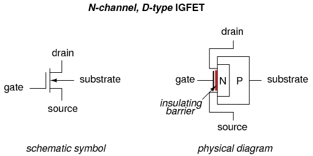
Observe cómo los cables de fuente y drenaje se conectan a cada extremo del canal N y cómo el cable de compuerta se conecta a una placa metálica separada del canal por una delgada barrera aislante. Esa barrera a veces está hecha de dióxido de silicio (el principal compuesto químico que se encuentra en la arena), que es un muy buen aislante. debido a estoMmetal (puerta) -Oxido (barrera) -SConstrucción de semiconductores (canal), el IGFET a veces se denomina MOSFET. Sin embargo, existen otros tipos de construcción IGFET, por lo que "IGFET" es el mejor descriptor para esta clase general de transistores.
Observe también cómo hay cuatro conexiones con el IGFET. En la práctica, elsustratoEl cable está conectado directamente alfuenteconducir para hacer que los dos sean eléctricamente comunes. Por lo general, esta conexión se realiza internamente al IGFET, eliminando la conexión de sustrato separada, lo que da como resultado un dispositivo de tres terminales con un símbolo esquemático ligeramente diferente:
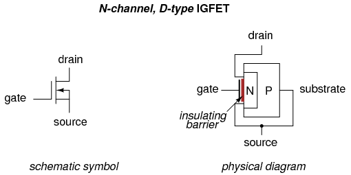
Con la fuente y el sustrato comunes entre sí, las capas N y P del IGFET terminan conectadas directamente entre sí a través del cable exterior. Esta conexión evita que se aplique voltaje a través de la unión PN. Como resultado, existe una región de agotamiento entre los dos materiales, pero nunca puede expandirse ni colapsarse. La operación JFET se basa en la expansión de la región de agotamiento de la unión PN, pero aquí en el IGFET eso no puede suceder, por lo que la operación IGFET debe basarse en un efecto diferente.
De hecho lo es, porque cuando se aplica un voltaje de control entre la puerta y la fuente, la conductividad del canal cambia como resultado de la región de agotamiento.emocionantemás cerca o más lejos de la puerta. En otras palabras, el ancho efectivo del canal cambia igual que con el JFET, pero este cambio en el ancho del canal se debe a la región de agotamiento.desplazamientoen lugar de región de agotamientoexpansión.
En un IGFET de canal N, un voltaje de control aplicado positivo (+) a la puerta y negativo (-) a la fuente tiene el efecto de repeler la región de agotamiento de la unión PN, expandiendo el canal tipo N y aumentando la conductividad:
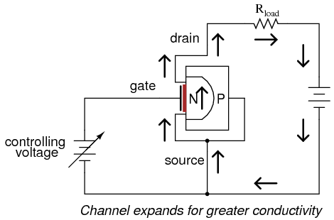
Invertir la polaridad del voltaje de control tiene el efecto opuesto, atrayendo la región de agotamiento y estrechando el canal, reduciendo en consecuencia la conductividad del canal:
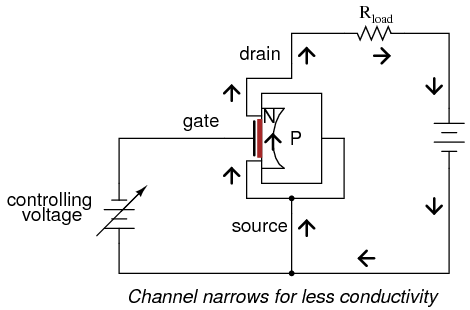
La puerta aislada permite controlar voltajes de cualquier polaridad sin peligro de polarizar directamente una unión, como era el caso de los JFET. Este tipo de IGFET, aunque se llama "tipo agotamiento", en realidad tiene la capacidad de tener su canalcualquieraagotado (canal estrechado)omejorado (canal expandido). La polaridad del voltaje de entrada determina de qué manera se influirá en el canal.
Comprender qué polaridad tiene qué efecto no es tan difícil como parece. La clave es considerar el tipo de dopaje semiconductor utilizado en el canal (¿canal N o canal P?), luego relacionar ese tipo de dopaje con el lado de la fuente de voltaje de entrada conectada al canal por medio del cable de fuente. Si el IGFET es un canal N y el voltaje de entrada está conectado de modo que el lado positivo (+) esté en la puerta mientras que el lado negativo (-) esté en la fuente, el canal mejorará a medida que se acumulen electrones adicionales en el lado del canal de la barrera dieléctrica. Piense, "negativo (-) se correlaciona conN-tipo, mejorando así el canal con el tipo correcto de portador de carga (electrones) y haciéndolo más conductor". Por el contrario, si el voltaje de entrada se conecta a un IGFET de canal N al revés, de modo que el negativo (-) se conecte a la puerta mientras que el positivo (+) se conecte a la fuente, los electrones libres serán "robados" del canal a medida que se carga el capacitor del canal de puerta, agotando así el canal de portadores de carga mayoritarios y haciéndolo menos conductor.
Para los IGFET de canal P, la polaridad del voltaje de entrada y los efectos del canal siguen la misma regla. Es decir, se necesita exactamente la polaridad opuesta a la de un IGFET de canal N para agotar o mejorar:
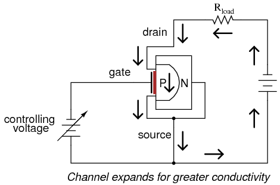
Ilustrando las polaridades de polarización adecuadas con símbolos IGFET estándar:
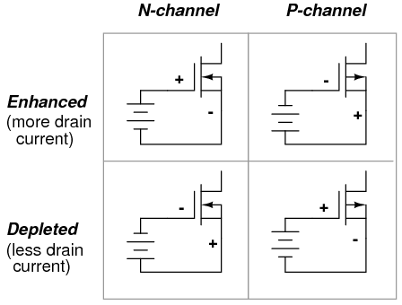
Cuando se aplica voltaje cero entre la puerta y la fuente, el IGFET conducirá corriente entre la fuente y el drenaje, pero no tanta corriente como lo haría si estuviera mejorado por el voltaje de puerta adecuado. Esto coloca al tipo de agotamiento, o simplementetipo D, IGFET en una categoría propia en el mundo de los transistores. Los transistores de unión bipolar sonnormalmente apagadoDispositivos: sin corriente de base, bloquean el paso de cualquier corriente a través del colector. Los transistores de efecto de campo de unión sonnormalmente encendidodispositivos: con voltaje de puerta a fuente aplicado cero, permiten una corriente de drenaje máxima (en realidad, puede convencer a un JFET para que genere corrientes de drenaje mayores aplicando un voltaje de polarización directa muy pequeño entre la puerta y la fuente, pero esto nunca debe hacerse en la práctica por el riesgo de dañar su frágil unión PN). Los IGFET tipo D, sin embargo, sonnormalmente a mediasDispositivos: sin voltaje de puerta a fuente, su nivel de conducción está entre el corte y la saturación total. Además, tolerarán voltajes de puerta-fuente aplicados de cualquier polaridad, siendo la unión PN inmune a daños debido a la barrera aislante y especialmente a la conexión directa entre la fuente y el sustrato evitando cualquier diferencial de voltaje a través de la unión.
Irónicamente, el comportamiento de conducción de un IGFET tipo D es sorprendentemente similar al de un tubo de electrones de la variedad triodo/tetrodo/pentodo. Estos dispositivos eran reguladores de corriente controlados por voltaje que también permitían que la corriente pasara a través de ellos sin aplicar un voltaje de control cero. Un voltaje de control de una polaridad (rejilla negativa y cátodo positivo) disminuiría la conductividad a través del tubo, mientras que un voltaje de la otra polaridad (rejilla positiva y cátodo negativo) mejoraría la conductividad. Me parece curioso que uno de los últimos diseños de transistores inventados exhiba las mismas propiedades básicas del primer dispositivo (electrónico) activo.
Algunos análisis de SPICE demostrarán el comportamiento de regulación de corriente de los IGFET de tipo D. Primero, una prueba con voltaje de entrada cero (puerta en cortocircuito a la fuente) y la fuente de alimentación pasó de 0 a 50 voltios. El gráfico muestra la corriente de drenaje:
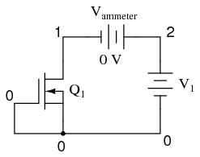
n-channel igfet characteristic curve m1 1 0 0 0 mod1 vammeter 2 1 dc 0 v1 2 0 .model mod1 nmos vto=-1 .dc v1 0 50 2 .plot dc i(vammeter) .end
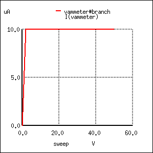
Como se esperaba de cualquier transistor, la corriente controlada se mantiene estable en un valor regulado en una amplia gama de voltajes de suministro de energía. En este caso ese punto regulado es 10 µA (1.000E-05). Ahora veamos qué sucede cuando aplicamos un voltaje negativo a la puerta (con referencia a la fuente) y barremos la fuente de alimentación en el mismo rango de 0 a 50 voltios:
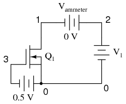
n-channel igfet characteristic curve m1 1 3 0 0 mod1 vin 0 3 dc 0.5 vammeter 2 1 dc 0 v1 2 0 .model mod1 nmos vto=-1 .dc v1 0 50 2 .plot dc i(vammeter) .end
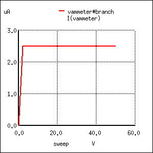
No es sorprendente que la corriente de drenaje ahora esté regulada a un valor más bajo de 2,5 µA (en comparación con 10 µA con voltaje de entrada cero). Ahora apliquemos un voltaje de entrada de la otra polaridad, paramejorarel IGFET:
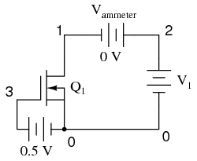
n-channel igfet characteristic curve m1 1 3 0 0 mod1 vin 3 0 dc 0.5 vammeter 2 1 dc 0 v1 2 0 .model mod1 nmos vto=-1 .dc v1 0 50 2 .plot dc i(vammeter) .end
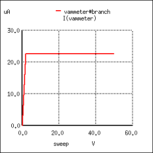
Con el transistor mejorado por el pequeño voltaje de control, la corriente de drenaje ahora tiene un valor aumentado de 22,5 µA (2.250E-05). A partir de estos tres conjuntos de cifras de voltaje y corriente, debería ser evidente que la relación entre la corriente de drenaje y el voltaje de la puerta-fuente no es lineal, tal como lo era con el JFET. Con 1/2 voltio de voltaje de agotamiento, la corriente de drenaje es de 2,5 µA; con entrada de 0 voltios la corriente de drenaje sube hasta 10 µA; y con 1/2 voltio de voltaje mejorado, la corriente es de 22,5 µA. Para obtener una mejor comprensión de esta no linealidad, podemos usar SPICE para trazar la corriente de drenaje en un rango de valores de voltaje de entrada, desde una cifra negativa (agotadora) hasta una cifra positiva (mejorada), manteniendo el voltaje de suministro de energía en V.1a un valor constante:
n-channel igfet m1 1 3 0 0 mod1 vin 3 0 vammeter 2 1 dc 0 v1 2 0 dc 24 .model mod1 nmos vto=-1 .dc vin -1 1 0.1 .plot dc i(vammeter) .end
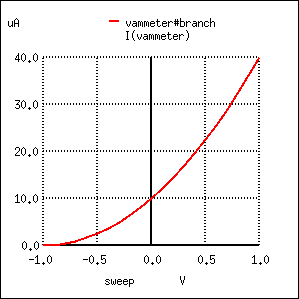
Al igual que con los JFET, esta no linealidad inherente del IGFET tiene el potencial de causar distorsión en un circuito amplificador, ya que la señal de entrada no se reproducirá con una precisión del 100 por ciento en la salida. Observe también que un voltaje puerta-fuente de aproximadamente 1 voltio en la dirección de agotamiento puede pellizcar el canal de modo que prácticamente no haya corriente de drenaje. Los IGFET de tipo D, como los JFET, tienen una cierta tensión nominal de pellizco. Esta clasificación varía según la característica única del transistor y puede no ser la misma que en nuestra simulación aquí.
Al trazar un conjunto de curvas características para el IGFET, vemos un patrón no muy diferente al del JFET:
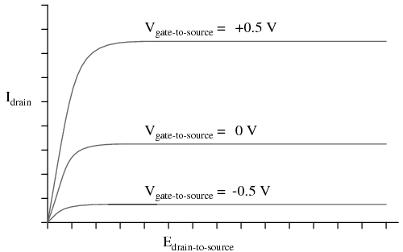
- REVISAR:
IGFETs de tipo enriquecimiento
- REVISAR:
Operación en modo activo
- REVISAR:
El amplificador de fuente común
- REVISAR:
El amplificador de drenaje común
- REVISAR:
El amplificador de compuerta común
- REVISAR:
Técnicas de polarización
- REVISAR:
Especificaciones y encapsulados de transistores
- REVISAR:
Peculiaridades del IGFET
- REVISAR:
MESFETs
- REVISAR:
IGBTs
Debido a sus puertas aisladas, los IGFET de todos los tipos tienen una ganancia de corriente extremadamente alta: no puede haber corriente de puerta sostenida si no hay una puerta continua.circuitoen el que los electrones pueden fluir continuamente. Entonces, la única corriente que vemos a través del terminal de puerta de un IGFET es cualquier transitorio (breve sobretensión) que pueda ser necesario para cargar la capacitancia del canal de puerta y desplazar la región de agotamiento cuando el transistor cambia de un estado "encendido" a un estado "apagado", o viceversa.
Esta alta ganancia de corriente parecería a primera vista colocar a la tecnología IGFET en una clara ventaja sobre los transistores bipolares para el control de corrientes muy grandes. Si se utiliza un transistor de unión bipolar para controlar una corriente de colector grande, debe haber una corriente de base sustancial generada o absorbida por algún circuito de control, de acuerdo con la relación β. Para dar un ejemplo, para que un BJT de potencia con un β de 20 conduzca una corriente de colector de 100 amperios, debe haber al menos 5 amperios de corriente de base, una cantidad sustancial de corriente en sí misma para que la maneje un circuito de control integrado o discreto en miniatura:
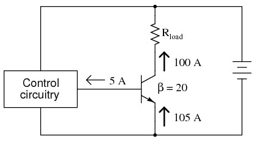
Sería bueno desde el punto de vista del circuito de control tener transistores de potencia con alta ganancia de corriente, de modo que se necesite mucha menos corriente para controlar la corriente de carga. Por supuesto, podemos usar transistores de par Darlington para aumentar la ganancia de corriente, pero este tipo de disposición aún requierefarMás corriente de control que un IGFET de potencia equivalente:
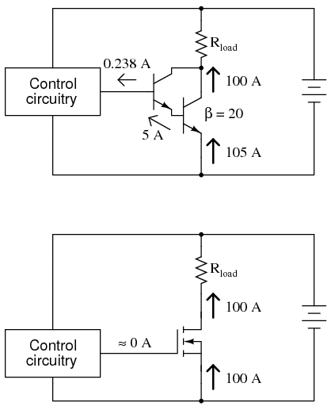
Desafortunadamente, sin embargo, los IGFET tienen sus propios problemas para controlar la alta corriente: generalmente exhiben una mayor caída de voltaje entre el drenaje y la fuente mientras están saturados que la caída de voltaje entre el colector y el emisor de un BJT saturado. Esta mayor caída de voltaje equivale a una mayor disipación de potencia para la misma cantidad de corriente de carga, lo que limita la utilidad de los IGFET como dispositivos de alta potencia. Aunque algunos diseños especializados, como el llamado transistor VMOS, se han diseñado para minimizar esta desventaja inherente, el transistor de unión bipolar sigue siendo superior en su capacidad para conmutar corrientes elevadas.
Una solución interesante a este dilema aprovecha las mejores características de los IGFET con las mejores características de los BJT, en un dispositivo llamadoTransistor bipolar de puerta aislada, oIGBT. También conocido como unMOSFET de modo bipolar, a Transistor de efecto de campo modulado por conductividad (COMFET), o simplemente comoTransistor de puerta aislada (IGT), es equivalente a un par Darlington de IGFET y BJT:
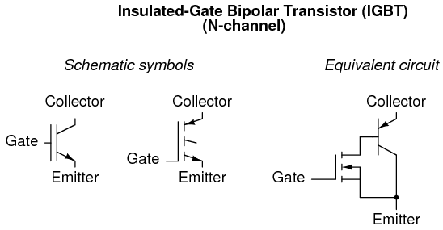
En esencia, el IGFET controla la corriente base de un BJT, que maneja la corriente de carga principal entre el colector y el emisor. De esta manera, hay una ganancia de corriente extremadamente alta (ya que la puerta aislada del IGFET prácticamente no extrae corriente del circuito de control), pero la caída de voltaje del colector al emisor durante la conducción total es tan baja como la de un BJT ordinario.
Una desventaja del IGBT sobre un BJT estándar es su tiempo de apagado más lento. PararápidoConmutación y alta capacidad de manejo de corriente, es difícil superar al transistor de unión bipolar. Se pueden lograr tiempos de apagado más rápidos para los IGBT mediante ciertos cambios en el diseño, pero sólo a expensas de una mayor caída de tensión saturada entre el colector y el emisor. Sin embargo, el IGBT proporciona una buena alternativa a los IGFET y BJT para aplicaciones de control de alta potencia.
- REVISAR:
Lecciones en circuitos eléctricoscopyright (C) 2000-2023 Tony R. Kuphaldt, según los términos y condiciones delCC BY License.